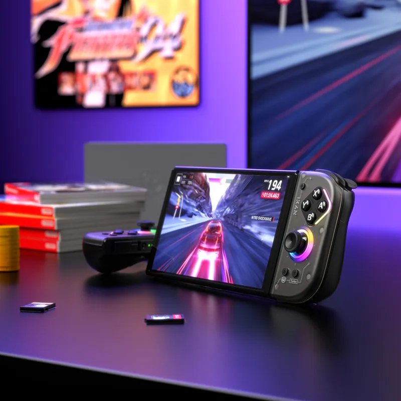
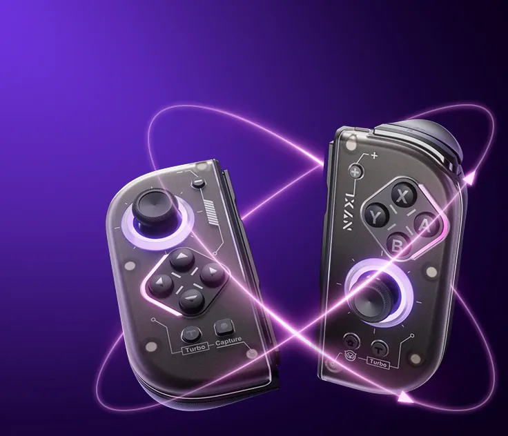

ไม่พบในคู่มือนี้
ภาพสินค้า


ภาพบนสุดของหน้านี้คือมุมด้านหน้า ภาพในหัวข้อนี้เป็นภาพสินค้าทางการของ NYXI ใช้ประกอบการดูทรงจอย
รุ่นและสเปก
| รายการ | ค่า | แหล่งที่มา |
|---|---|---|
| ชื่อรุ่น | Hyperion 2 Wireless Controller (หน้าสินค้าใช้ชื่อ NYXI Hyperion 2 Wireless JoyPad for Switch) | คู่มือ, หน้าสินค้า |
| รหัสรุ่น | NJ12 (ชื่อบลูทูธ NJ12-L และ NJ12-R) | คู่มือ; ชื่อบลูทูธจากหน้าอัปเดตเฟิร์มแวร์ |
| ความเข้ากันได้ | คู่มือระบุ NS หน้าสินค้าระบุ Switch LCD, Switch OLED, Switch Lite และ Switch 2 | คู่มือ, หน้าสินค้า |
| การเชื่อมต่อ | บลูทูธ 5.0 และโหมดติดข้างเครื่อง (Handheld) | หน้าสินค้า (คู่มือไม่ระบุเลขเวอร์ชันบลูทูธ) |
| โหมดเล่น | Tabletop Mode และ Handheld Mode | หน้าสินค้า |
| วัสดุ | PC+ABS | หน้าสินค้า |
| แท่งอนาล็อก | Hall Effect | หน้าสินค้า |
| ปุ่มและทริกเกอร์ | Micro Switch | หน้าสินค้า |
| ไจโร | 6-Axis Gyro Motion Sensing | หน้าสินค้า |
| อัตราโพลลิงของจอยสติ๊ก | บลูทูธ 125 Hz | หน้าสินค้า |
| เดดโซนจอยสติ๊ก | ตรงกลาง 8, ขอบ 10 | หน้าสินค้า |
| ระยะรับสัญญาณ | 10 เมตร | หน้าสินค้า |
| ความจุแบตเตอรี่ | จอยซ้าย 500 mAh, จอยขวา 500 mAh | คู่มือ, หน้าสินค้า |
| แรงดันชาร์จ | 5V | คู่มือ |
| กระแสชาร์จ | จอยซ้าย 220 mA, จอยขวา 220 mA | คู่มือ |
| เวลาชาร์จ | 2.5 ชั่วโมง | หน้าสินค้า |
| เวลาใช้งาน | 5 ชั่วโมง / 10 ชั่วโมงเมื่อปิดไฟ | หน้าสินค้า |
| ขนาด (ประมาณ) | จอยซ้ายและจอยขวา 51 × 104 × 46 มม. | คู่มือ, หน้าสินค้า |
| น้ำหนัก (ประมาณ) | จอยซ้ายและจอยขวา 80 กรัม | คู่มือ, หน้าสินค้า |
| เทอร์โบ | มี ปรับความเร็วได้ | คู่มือ, หน้าสินค้า |
| ปุ่มหลังโปรแกรมได้ | มี 2 ปุ่ม (ML / MR) | คู่มือ, หน้าสินค้า |
| แรงสั่น | ปรับได้ 4 ระดับ | คู่มือ, หน้าสินค้า |
| ไฟ RGB | ปรับสี รูปแบบ และความสว่างได้ | คู่มือ, หน้าสินค้า |
| ฝาหน้าแม่เหล็กถอดได้ | มี | หน้าสินค้า |
โหมดเชื่อมต่อ และการจับคู่
แหล่งที่มาหลักคือคู่มือส่วน For use with SWITCH platform ข้อมูล Switch 2 มาจาก FAQ บนหน้าสินค้า
ต่อแบบสไลด์เข้าเครื่อง
เลื่อนจอยซ้ายและจอยขวาเข้ากับรางด้านข้างของเครื่อง SWITCH เพื่อใช้งาน
ใช้แยกผ่านบลูทูธ
- ที่หน้าหลักของเครื่อง SWITCH ไปที่ Controller แล้วเลือก Change Grip/Order
- ขณะที่จอยปิดอยู่ กดค้างปุ่ม Pairing นาน 3 วินาที ไฟช่องสัญญาณ (Channel Light) จะกะพริบเร็ว เข้าสู่โหมดจับคู่
- หลังประมาณ 3–5 วินาที ไฟช่องสัญญาณที่ตรงกับช่องนั้นจะติดค้าง แสดงว่าเชื่อมต่อสำเร็จ
Switch 2
ตาม FAQ ของหน้าสินค้า Hyperion 2 เชื่อมต่อ Switch 2 ได้ผ่านบลูทูธ แต่ขณะนี้ยังไม่รองรับโหมดติดข้างเครื่อง (handheld mode) และต้องอัปเดตเฟิร์มแวร์ก่อนเชื่อมต่อ Switch 2 รายละเอียดอยู่ที่หน้าอัปเดตเฟิร์มแวร์ nyxigame.com/pages/upgrade-firmware
ปลุกจอย และปลุกเครื่อง
- ปลุกจอยซ้าย: กดปุ่ม Screenshot (Capture)
- ปลุกจอยขวา: กดปุ่ม HOME
- เมื่อจอยเชื่อมกับเครื่อง SWITCH อยู่แล้ว และเครื่องอยู่ในโหมดสลีป กดปุ่ม HOME บนจอยขวา เพื่อเชื่อมต่อใหม่และปลุกเครื่อง SWITCH
หัวข้อ Sleep Function ในคู่มือระบุเพิ่มว่า ขณะจอยอยู่ในโหมดสลีป กดปุ่ม HOME บนจอยเพื่อเชื่อมต่อใหม่และปลุกเครื่อง SWITCH
โหมดสลีป แบตเตอรี่ และการชาร์จ
แหล่งที่มา: คู่มือส่วน Sleep Function และ Charging Function รวมกับ FAQ การชาร์จบนหน้าสินค้า
โหมดสลีป
- สลีปด้วยตนเอง: กดปุ่ม Pairing เพื่อตัดการเชื่อมต่อและเข้าสู่โหมดสลีป
- ขณะอยู่ในสถานะจับคู่เริ่มต้น ถ้าไม่มีการเชื่อมต่อนาน 2 นาที 30 วินาที จอยจะเข้าสู่โหมดสลีป
- ขณะใช้งาน ถ้าไม่มีการกดปุ่มหรือขยับจอยสติ๊กนาน 5 นาที จอยจะเข้าสู่โหมดสลีป
- ในโหมดสลีป กดปุ่ม HOME เพื่อเชื่อมต่อใหม่และปลุกเครื่อง SWITCH
การชาร์จ
คู่มือระบุ 2 วิธี
- ชาร์จผ่านเครื่อง SWITCH
- ชาร์จผ่านกริปของจอย โดยต่อกริปด้วยสายข้อมูล USB แรงดันมาตรฐาน 5V
FAQ บนหน้าสินค้าระบุ 2 วิธี ดังนี้
- ติดจอยข้างเครื่อง SWITCH เพื่อชาร์จ
- ใช้สะพานชาร์จตรงกลาง (rechargeable middle bridge) ซึ่งขณะเขียน FAQ ยังระบุว่าจะวางขายในภายหลัง
เวลาชาร์จตามหน้าสินค้าประมาณ 2.5 ชั่วโมง เวลาใช้งานตามหน้าสินค้า 5 ชั่วโมง หรือ 10 ชั่วโมงเมื่อปิดไฟ
ไฟแสดงสถานะการชาร์จ และแบตต่ำ
- ขณะจอยปิด: ไฟช่องสัญญาณทุกดวงกะพริบช้า เมื่อชาร์จเต็ม ไฟช่องสัญญาณทุกดวงดับ
- ขณะจอยใช้งานอยู่: ไฟช่องสัญญาณของโหมดปัจจุบันกะพริบช้า เมื่อชาร์จเต็ม ไฟช่องสัญญาณดวงนั้นติดค้าง
- แบตต่ำกว่า 30%: ไฟ RGB กะพริบ
- แบตต่ำกว่า 20%: ไฟ RGB ดับ และไฟช่องสัญญาณกะพริบ
ซอฟต์แวร์และเฟิร์มแวร์
คู่มือระบุว่าดาวน์โหลดแอป KeyLinker ได้บน iOS และ Android การเชื่อมผ่านแอปใช้สำหรับโปรแกรมปุ่มและอัปเดตเฟิร์มแวร์ มีคิวอาร์โค้ดดาวน์โหลดในคู่มือ
หน้าอัปเดตเฟิร์มแวร์ทางการระบุว่า NYXI Hyperion 2 Wireless JoyPad for Switch รหัส NJ12 อัปเดตได้ผ่านแอป KeyLinker เท่านั้น ชื่อบลูทูธคือ NJ12-L และ NJ12-R เวอร์ชันเฟิร์มแวร์ที่ระบุในตารางคือ V1.19
ขั้นตอนอัปเดตผ่าน KeyLinker ตามหน้าอัปเดตเฟิร์มแวร์
- ดาวน์โหลดแอป KeyLinker จาก App Store บน iOS หรือ Google Play บน Android ลิงก์ที่หน้าทางการให้ไว้คือ iOS และ Android
- สลับจอยให้อยู่ในสถานะรอเชื่อมต่อบลูทูธ ตามวิธีในคู่มือรุ่นนั้น
- เปิดแอป KeyLinker เลื่อนหน้ารอให้ค้นหาสัญญาณบลูทูธ แล้วแตะชื่อบลูทูธของรุ่นที่ต้องการอัปเดต
- เมื่อเชื่อมต่อแล้ว แตะไอคอนเฟืองด้านขวาของชื่อบลูทูธ
- แตะจุดสามจุดมุมขวาบน แล้วเลือกตัวเลือกอัปเดตเฟิร์มแวร์
- รอให้แอปรุ่นเฟิร์มแวร์ แล้วแตะอัปเดต จนจอยอัปเดตเสร็จ
หมายเหตุในหน้าเดียวกัน: บางครั้งหน้าอัปเดตอาจแสดงเวอร์ชันล่าสุดเป็น -- ให้เข้าหน้าอัปเดตเฟิร์มแวร์ใหม่แล้วรีเฟรช
FAQ บนหน้าสินค้าระบุว่าต้องอัปเดตเฟิร์มแวร์ก่อนเชื่อมต่อ Switch 2
คาลิเบรต และการรีเซ็ต
แหล่งที่มา: คู่มือส่วน Controller Calibration Function, Reset Function และ Restore Settings
คาลิเบรต
ใช้เมื่อจอยสติ๊กหรือเซนเซอร์เคลื่อนไหวทำงานผิดปกติ
- ขณะจอยเปิดอยู่ กดค้าง T และปุ่ม − บนจอยซ้ายนาน 3 วินาที เพื่อเข้าโหมดคาลิเบรต หรือกดค้าง T และปุ่ม + บนจอยขวานาน 3 วินาที เมื่อเข้าโหมดนี้ ไฟ RGB จะกะพริบสลับแดงและน้ำเงิน
- หมุนจอยสติ๊กซ้ายหรือจอยสติ๊กขวาให้สุดวง ประมาณ 2–3 รอบ
- วางจอยบนพื้นราบ แล้วกดปุ่ม − บนจอยซ้าย หรือกดปุ่ม + บนจอยขวา เพื่อจบการคาลิเบรต
รีเซ็ตจากรูรีเซ็ต
เมื่อจอยทำงานผิดปกติ ค้าง หรือมีอาการผิดปกติอื่น กดสวิตช์ในรูรีเซ็ตที่ด้านหลังจอย เพื่อรีเซ็ต แล้วเชื่อมต่อจอยใหม่
คืนค่าตั้งต้น (Restore Settings)
กดค้างปุ่ม T นาน 10 วินาที จอยจะสั่นหนึ่งครั้ง การรีเซ็ตนี้คืนค่าเทอร์โบ แรงสั่น และการโปรแกรมกลับเป็นค่าเริ่มต้น
แหล่งที่มา
- หน้าสินค้า
- หน้าดาวน์โหลดคู่มือ
- ไฟล์คู่มือทางการ (NJ12, ชื่อไฟล์ต้นทาง NJ12 manual for cutomer.pdf): cdn-files.myshopline.com
- หน้าอัปเดตเฟิร์มแวร์
สำเนาคู่มือ PDF ชุดเดียวกับไฟล์ทางการ เก็บไว้ในหน้านี้:
สรุปจากคู่มือและหน้าสินค้า NYXI